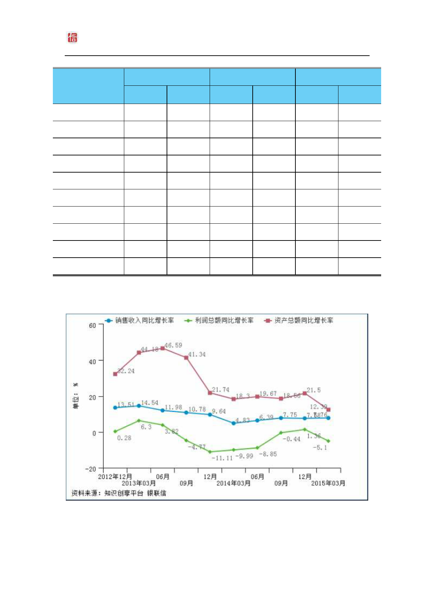

北京银联信投资顾问有限责任公司
河南省有色金属矿采选业发展研究报告（2015 年第 1
季度）
图表 14：河南省有色金属矿采选业行业成长能力比率
报告期
销售收入同比增长率
河南
全国
利润总额同比增长率
河南
全国
资产总额同比增长率
河南
全国
2012 年 01-12 月
13.51
17.40
0.28
-0.21
32.24
14.85
2013 年 01-03 月
14.54
14.91
6.30
-1.87
44.18
20.98
2013 年 01-06 月
11.98
12.25
3.82
-8.99
46.59
19.79
2013 年 01-09 月
10.78
9.41
-4.77
-11.67
41.34
17.33
2013 年 01-12 月
9.64
9.68
-11.11
-17.15
21.74
13.46
2014 年 01-03 月
4.83
4.12
-9.99
-15.55
18.30
10.74
2014 年 01-06 月
6.39
4.69
-8.85
-14.20
19.67
12.03
2014 年 01-09 月
7.75
4.08
-0.44
-10.48
18.56
11.43
2014 年 01-12 月
7.58
2.57
1.36
-10.65
21.50
11.95
2015 年 01-03 月
7.76
-0.97
-5.10
-22.90
12.39
8.98
数据来源：知识创享平台 银联信
单位：%
图表 15：河南省有色金属矿采选业行业成长能力比率
http：//www.unbank.info
12 服务电话：（010）63368810